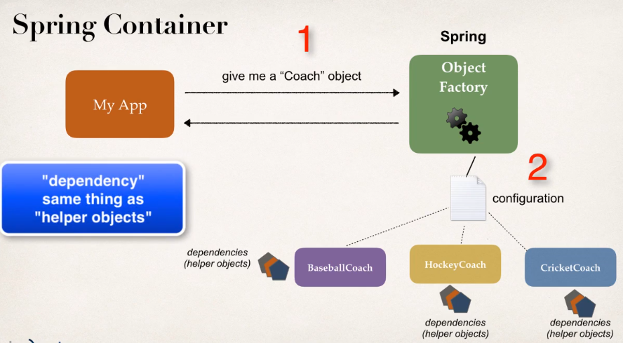

The dependencies of the objects are managed by the Spring container object factory:

So instead of having to build the object and all of its dependencies, the spring factory will do this work for you.
There are several injection types in Spring. The more common are:
- Constructor Injection
- Setter Injection
Now we will show an example where the BaseballCoach has FortuneService as a dependency. So, first we create the dependency interface as follows:
package com.springdemo;
public interface FortuneService {
public String getFortune();
}
Next we create the dependency class than implements the interface:
package com.springdemo;
public class HappyFortuneService implements FortuneService {
@Override
public String getFortune() {
return "Today is your lucky day!";
}
}
Now create a constructor for the dependency in the class that has the dependency
package com.luv2code.springdemo;
public class BaseballCoach implements Coach {
// define a private field for the dependency
private FortuneService fortuneService;
// define a constructor for dependency injection
public BaseballCoach(FortuneService theFortuneService) {
fortuneService = theFortuneService;
}
@Override
public String getDailyWorkout() {
return "Spend 30 minutes on batting practice";
}
@Override
public String getDailyFortune() {
// use my fortuneService to get a fortune
return fortuneService.getFortune();
}
}
Finally define the dependency in the configuration file:
<?xml version="1.0" encoding="UTF-8"?>
<beans xmlns="http://www.springframework.org/schema/beans"
xmlns:xsi="http://www.w3.org/2001/XMLSchema-instance"
xmlns:context="http://www.springframework.org/schema/context"
xsi:schemaLocation="http://www.springframework.org/schema/beans
http://www.springframework.org/schema/beans/spring-beans.xsd
http://www.springframework.org/schema/context
http://www.springframework.org/schema/context/spring-context.xsd">
<!-- Define your beans here -->
<!-- define the dependency -->
<bean id="myFortuneService"
class="com.luv2code.springdemo.HappyFortuneService">
</bean>
<!-- Bean with the dependency -->
<bean id="myCoach"
class="com.luv2code.springdemo.TrackCoach">
<!-- Set up constructor injection, note ref=id of bean -->
<constructor-arg ref="myFortuneService" />
</bean>
</beans>